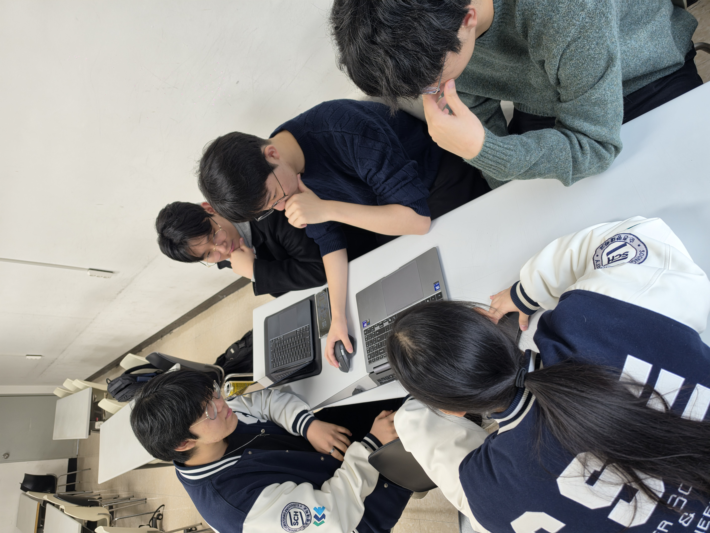
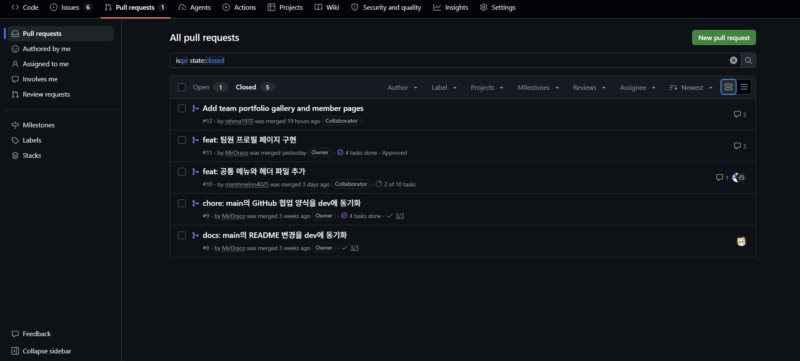
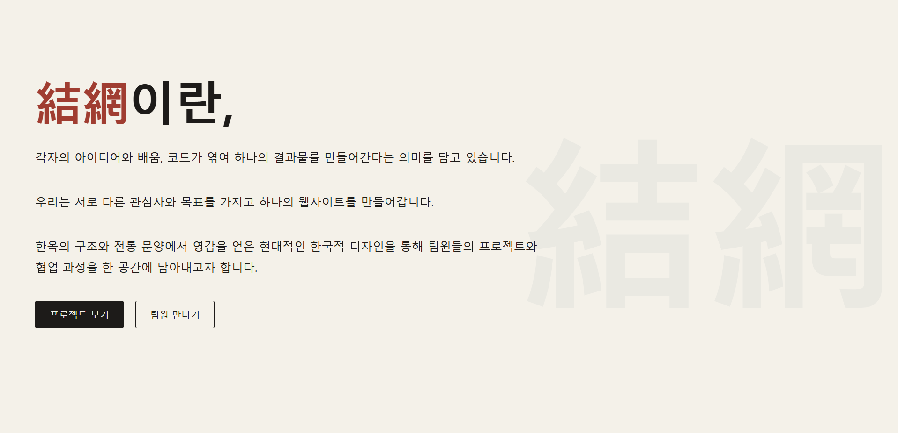

1차 회의 · 2026.11.02 · 온라인
팀 콘셉트(結網) 및 역할 분담 확정
- 안건: 웹사이트 콘셉트 선정, 담당 페이지 분배, Git 협업 규칙 논의
- 결정: 한국적 UI 콘셉트 채택 및 브랜치 전략(main / dev / feature) 확정
참석자: 박민찬, 김동근, 목인수, 송명근, 정에디, 최윤하
회의 기록, 개발 과정, 활동 사진과 결과물을 정리한 페이지입니다.
1차 회의 · 2026.11.02 · 온라인
참석자: 박민찬, 김동근, 목인수, 송명근, 정에디, 최윤하
2차 회의 · 2026.MM.DD · 온라인
참석자: [참석자 입력]

활동 사진
[프로젝트 최종 점검 및 발표자료 회의]

개발 과정
[팀원별 PR 요청]

결과물
[GitHub Pages를 통한 웹사이트 배포]